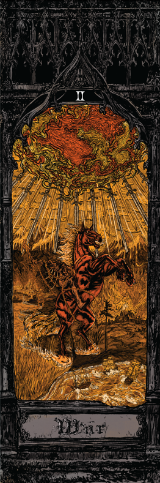
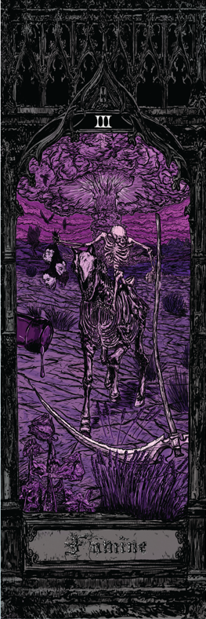
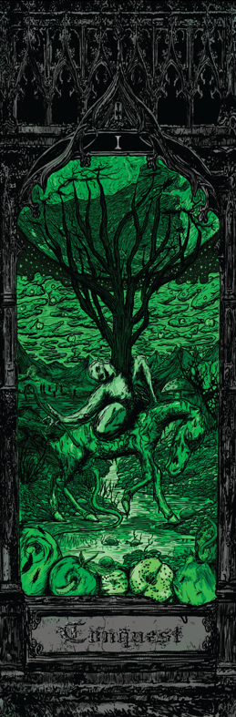
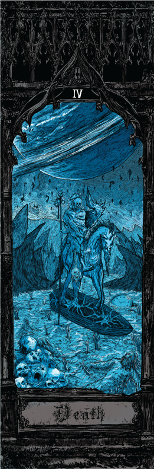
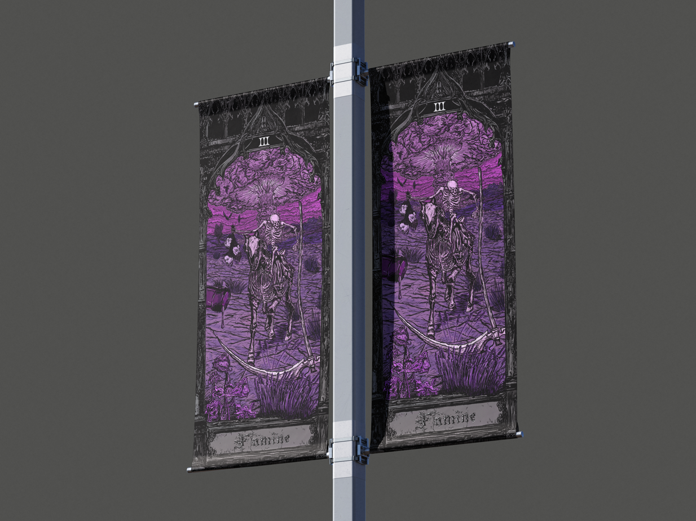
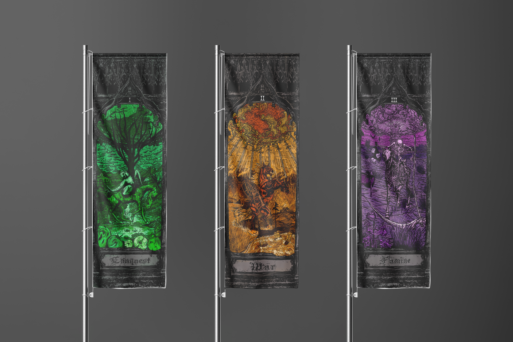
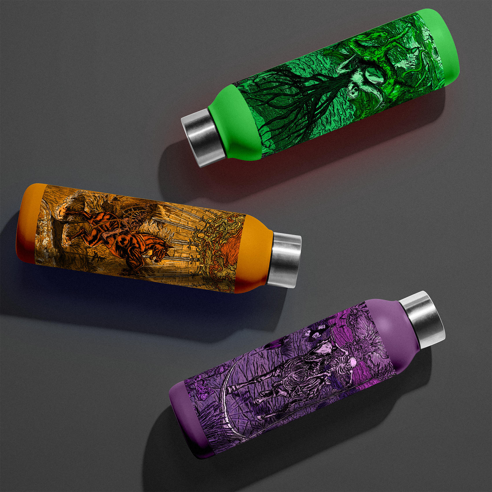
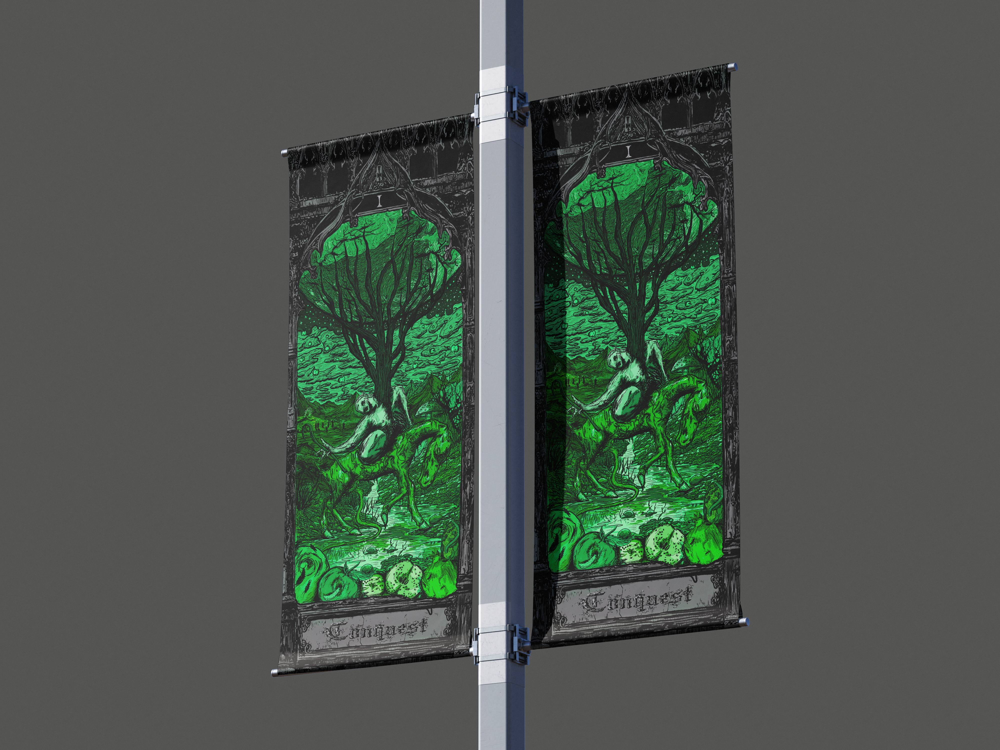
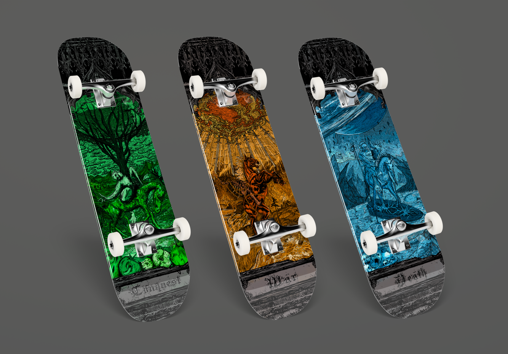
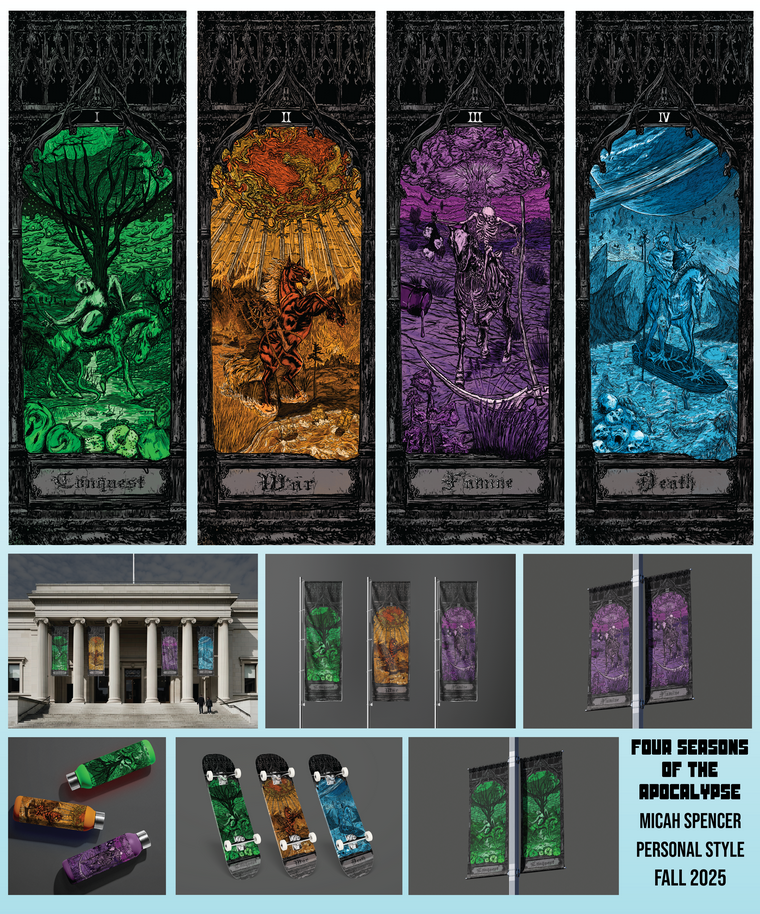

There is supposedly visual silver lining on nuclear explosions. The beauty of chaos and destruction is hard to not look at or admire. These illustrative banners were created for the art of the apocalypse.









